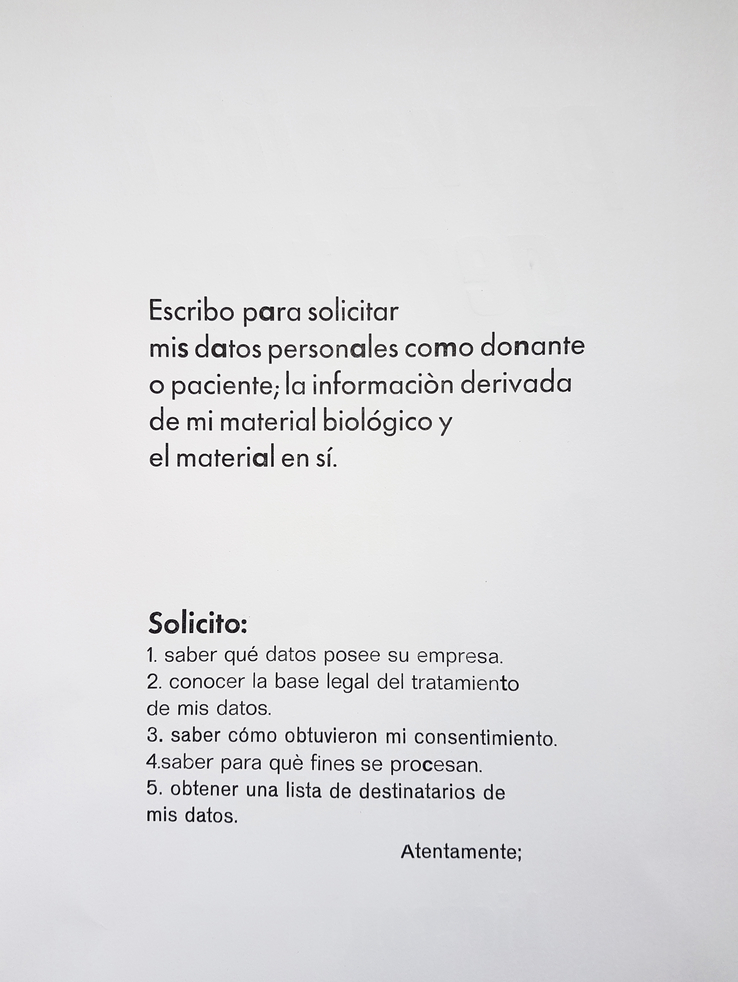

Genetic Privacy for/or
Genetic Privacy for/or


Today most people are aware that data capitalism consists in extracting information shared online often without consent. There are many projects aimed at empowering people in the face of these data based marketing and surveillance strategies. However, not so much attention has been paid to the way that biological material is also treated and sold across similar structures, especially in the context of the Assisted Reproductive Technology and Stem Cell Research industries. Despite (liberal) feminist-inspired policy changes to how bio-data is extracted, scientific and economic imperatives continue to determine the conditions of exchange.
Genetic Privacy For/Or is a letter that donors and patients in Europe can use to file 'data'-access requests to ART and stem cell research industry clinics and biobanks. The letter was developed in correspondence with personaldata.io – a Switzerland-based non-profit that offers free legal advice on filing data access requests to social media related companies like Tinder, Twitter, Facebook, according to the guidelines introduced by the 2018 GDPR legislation.
The letter sets out an argument for protecting biological matter under the same privacy rights laws that currently protects personal data – not because privacy is an adequate model politically, but because it offers the only legal precedent at the moment for requesting key information necessary to pinpoint the exact moments where access to individual data (whether personal or biological) is traded for money. This information would be needed to calculate the redistribution of both big data and bioeconomy profits – one means of empowerment in the age of bioeconomic and data capitalism. The project, printed using type-set in collaboration with Barcelona based printing collective L'Automatica and forms part of the Patrimony of Gestures project.